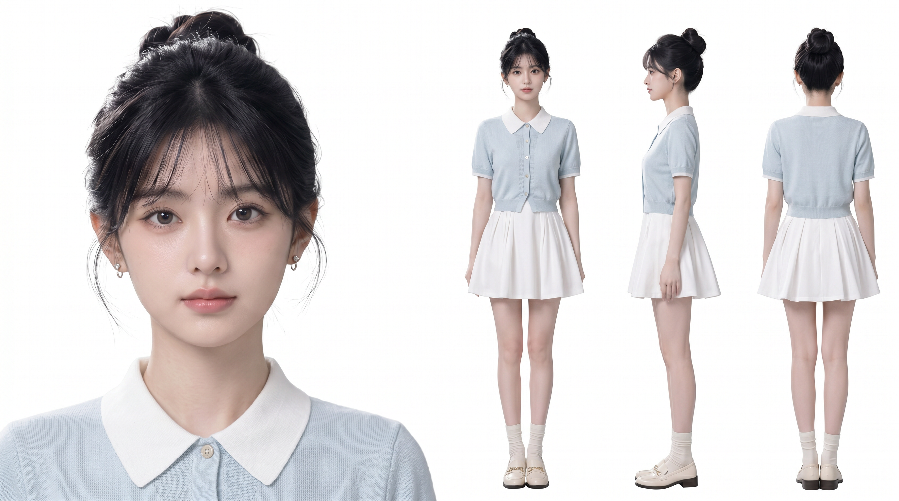
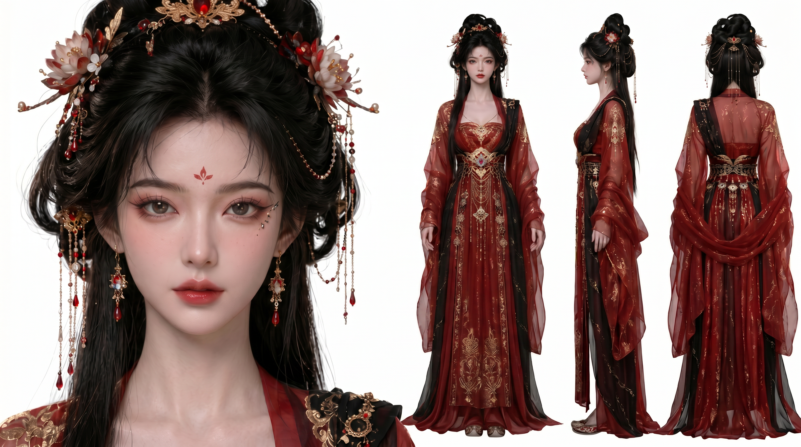
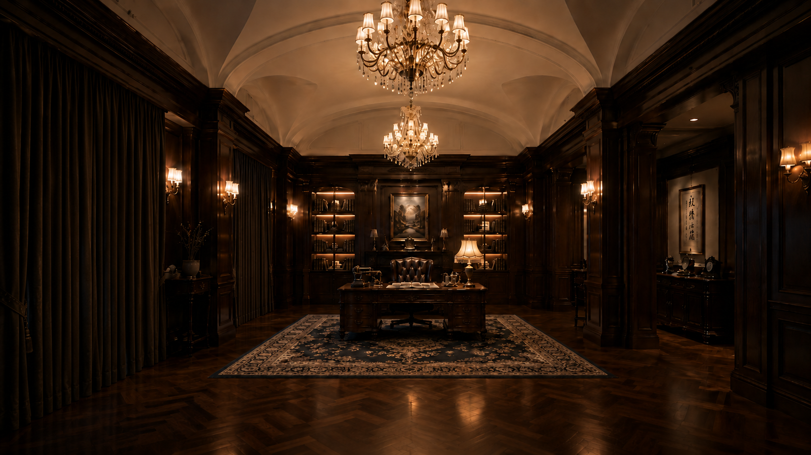
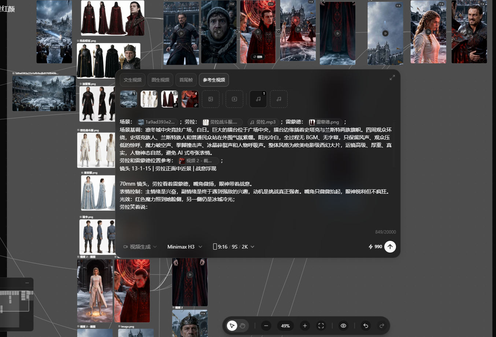
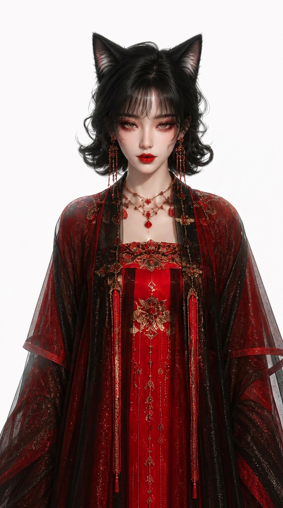

AI Video Production
AI 视频
全流程制作。
从剧本拆解与分镜设计开始，到角色、场景、镜头生成，再到筛选、剪辑与成片交付。
剧本拆解
分镜设计
角色与场景资产
图像与视频生成
筛选与修正
成片交付
01 / 04
分镜 · 生成 · 筛选 · 成片
AI 视频制作，
需要能进入生产的镜头判断力。
“抽卡”是制作中的生成与筛选，但前提是分镜已经明确：角色在哪、怎么动、镜头从哪拍、光线是什么状态。这样从大量候选画面里挑出的，才是能衔接上下镜头的可用素材。
关键能力
- 分镜理解
- AI 生成与筛选
- 角色一致性
- 场景连续性
- 图生视频
- 素材交付
制作样本
先看前期制作如何为生成锁定人物、空间和镜头条件；再看这些要求如何进入视频制作与成片。
01
前期制作
角色、场景与分镜是后续生成的制作依据。先锁定，再进入镜头生产。




02
视频制作与成片
在前期要求已经锁定的基础上，生成、筛选和修正动态镜头，最后进入商业片或短剧成片。
Storyboard Execution / Case Study
每一镜，都先
锁定人物与空间。
这是我把剧本转换为 AI 可执行镜头的方式。先根据场景图固定空间与人物关系，再为每个镜头写清景别、焦段、机位、动作、光线和声音，避免人物互换位置或镜头失去叙事功能。
-
04-01
远景 · 24mm · 固定机位
从办公室前部拍向中央双开门与右侧办公桌。洛玉在画面右后方独自操作电脑，先建立真实空间与等待订单的状态。
建立场景、人物起点与空间关系。
-
04-03
中远景 · 35mm · 稳定跟拍
程立与大勇从后方中央门进入，沿长桌向电脑桌走。最终锁定为左大勇、中程立、右洛玉，后续镜头不允许互换位置。
把人物调度变成可持续的构图规则。
-
04-05
电脑与手部 · 65mm · 固定机位
洛玉握鼠标的右手在前景，屏幕出现“订单 ×1”。用道具信息推动剧情，避免无意义的面部放大。
让订单信息成为画面里的叙事转折。
-
04-11
三人中景 · 45mm · 固定机位
程立从中间位置俯身看电脑；大勇保持左侧稍后；洛玉仍坐在右侧。三人之间的视线与层次严格服务于电脑信息。
控制角色关系、表演反应与镜头焦点。
制作流程
生成并不是终点。每次出图都要回到分镜、连续性和最终镜头是否可用上判断。
锁定人物、场景
与站位关系
先明确谁在画面哪一侧、谁先动、空间锚点在哪里，避免后续镜头人物互换与场景漂移。
写清镜头条件
再生成筛选
用景别、焦段、机位、运镜、动作、光线与声音约束镜头，再从候选结果中筛选可用素材。
修正角色与
场景连续性
处理人物五官、服装、空间、构图和光影漂移，让单个素材与前后镜头都能衔接。
交付可进入
视频制作的镜头
输出可用于图生视频、剪辑或短剧生产的素材，并在动态画面里继续检验表演和节奏。
选集 / AI 短剧
selected moving image
从生成结果，
到可剪镜头。
一张图的完成度不等于一段视频可用。AI 视频制作需要让角色从参考图走进场景、镜头与剧情，并在连续画面里保持叙事与视觉上的成立。
- 前置理解分镜阅读 / 角色与场景需求
- 制作环节生成 / 筛选 / 修正 / 素材整理
- 后续衔接图生视频 / 多镜头 / 剪辑制作
需要一位熟悉
AI 视频制作
流程的人？
张卓钰
AI 视频制作 / 生成与筛选